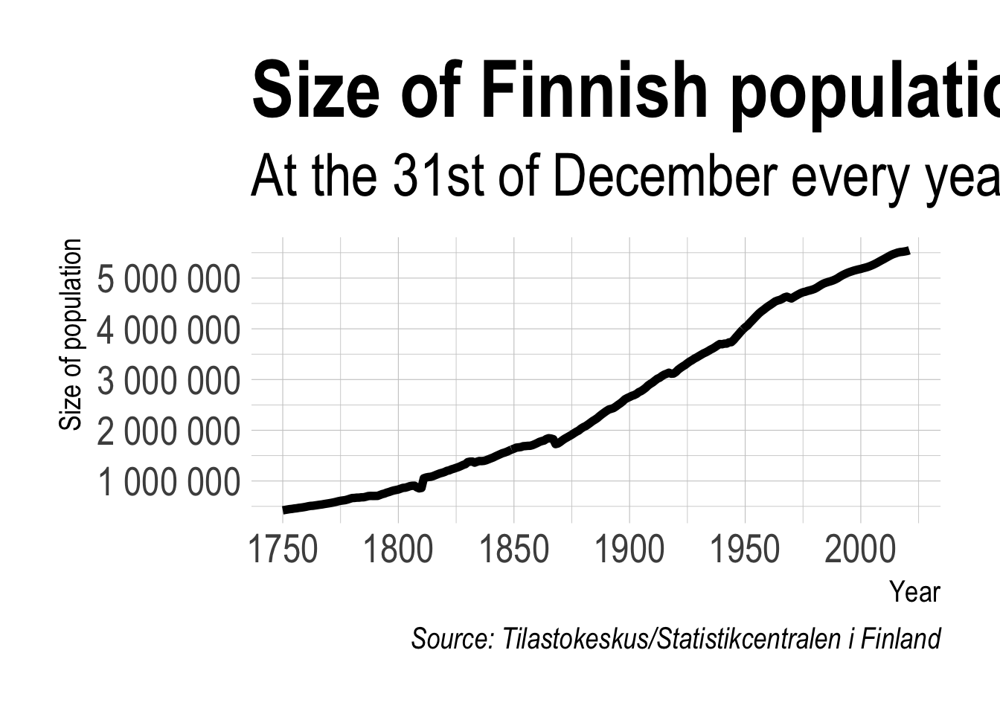

Jag skulle påstå att PowerPoint tillsammans med Excel är det överlägset vanligaste sättet att rapportera analytiska resultat. I min roll som konsult har jag träffat många analytiker som önskar att de kunde lägga mindre tid på att ta fram PowerPoints och mer tid på faktisk analys.
Med paketet officer kan du enkelt skapa PowerPoints från R och dessutom utnyttja din organisations mall.
Först behöver vi lite data. Den tar vi ner från Tilastokeskus - Finlands statistikcentral med hjälp av paketet pxweb. Nedan hämtar vi data för befokningsmängden i Finland sedan 1750.
library(pxweb)
pxweb 0.13.1: R tools for the PX-WEB API.
https://github.com/ropengov/pxweb
pxweb_query_list <-list("Vuosi"=as.character(1750:2021),"Sukupuoli"=c("SSS"),"Tiedot"=c("vaesto"))# Download data px_data <-pxweb_get(url ="https://statfin.stat.fi/PXWeb/api/v1/sv/StatFin/vaerak/statfin_vaerak_pxt_11rb.px",query = pxweb_query_list)# Convert to data.frame px_data_frame <-as.data.frame(px_data, column.name.type ="text", variable.value.type ="text")head(px_data_frame)
År Kön Befolkning 31.12.
1 1750 Totalt 421500
2 1751 Totalt 429900
3 1752 Totalt 437600
4 1753 Totalt 445300
5 1754 Totalt 450100
6 1755 Totalt 457800
Nästa steg är att städa data lite.
library(dplyr, warn.conflicts =FALSE)
Warning: package 'dplyr' was built under R version 4.1.2
library(janitor, warn.conflicts =FALSE) ## Paket för att bland annat städa upp namn på kolumner population_df <- px_data_frame %>% janitor::clean_names() %>%rename(year = ar, population = befolkning_31_12) %>%mutate(year =as.numeric(year))
I min visualisering använder jag paketet hrbrthemes som har ett tema jag tycker om.
# Cite the data as library(ggplot2)library(hrbrthemes)population_plot <- population_df %>%ggplot(aes(year, population)) +geom_line(size =2) +scale_y_continuous(labels = scales::number) +theme_ipsum(base_size =20,plot_title_size =40,subtitle_size =30,caption_size =15,axis_title_size =15) +labs(title ="Size of Finnish population since 1750",subtitle ="At the 31st of December every year",x ="Year",y ="Size of population",caption ="Source: Tilastokeskus/Statistikcentralen i Finland" ) +theme(text =element_text(size =50))population_plot

Visualiseringen är lite stor, men den kommer att se bättre ut i en PowerPoint.
Nu ska vi lägga in det här i en powerpoint. För att göra det använder jag paketet officer.
I slutet av förra året gick det företag jag arbetar för Ferrologic Analytics samman med ett finskt bolag som heter Solita. Så jag tänkte att jag kunde använda deras PowerPoint-mall för att skapa PowerPointen.
Först läser jag in PowerPoint-filen och undersöker dess layouts. Dessa motsvarar valen du kan göra när du klickar på Ny slide i PowerPoint.
Genom att ta en graf och lägga den i en placeholder kommer R alltid att skala grafen korrekt och du behöver inte oroa dig över bredd, höjd eller upplösning.
Vi börjar med att lägga till en titel-slide, notera här att vi använder ph_location_type för att identifiera vår placeholder type ctrTitle.
För att lägga till vår graf använder vi oss av en annan layout men här använder ph_location_fullsize som helt enkelt tar grafen och gör så att den tar upp hela vår slide. Vi hade också kunnat specificera en location här.